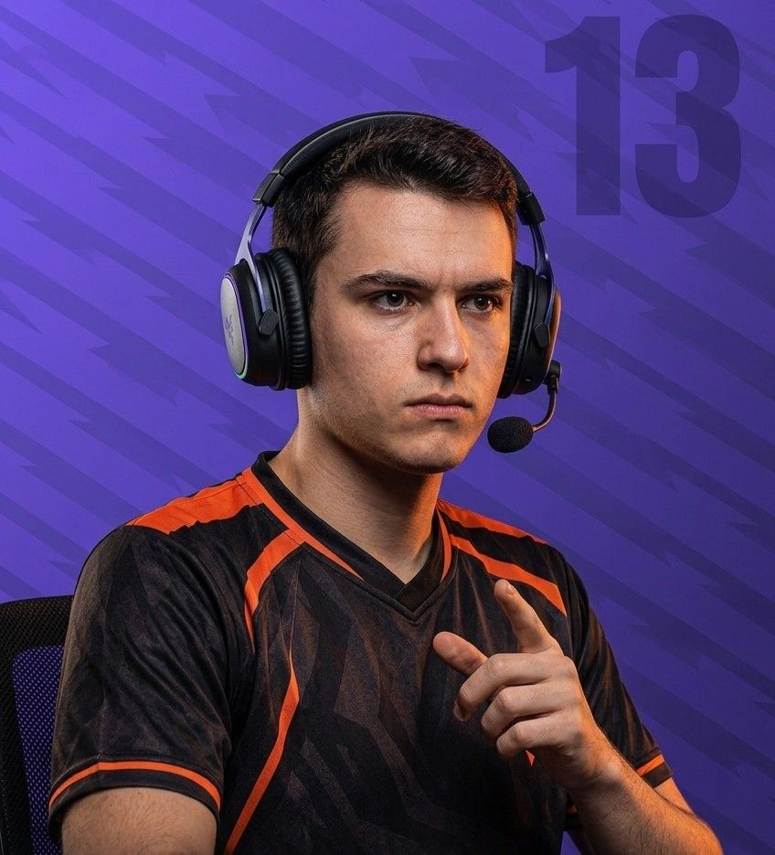
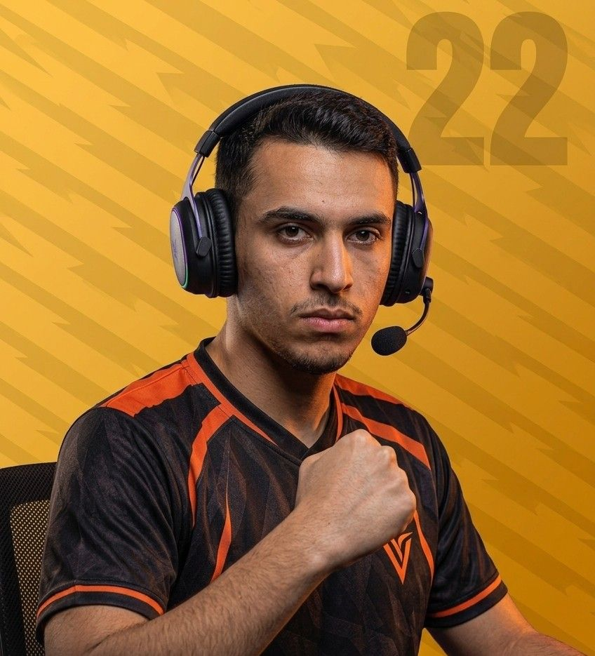
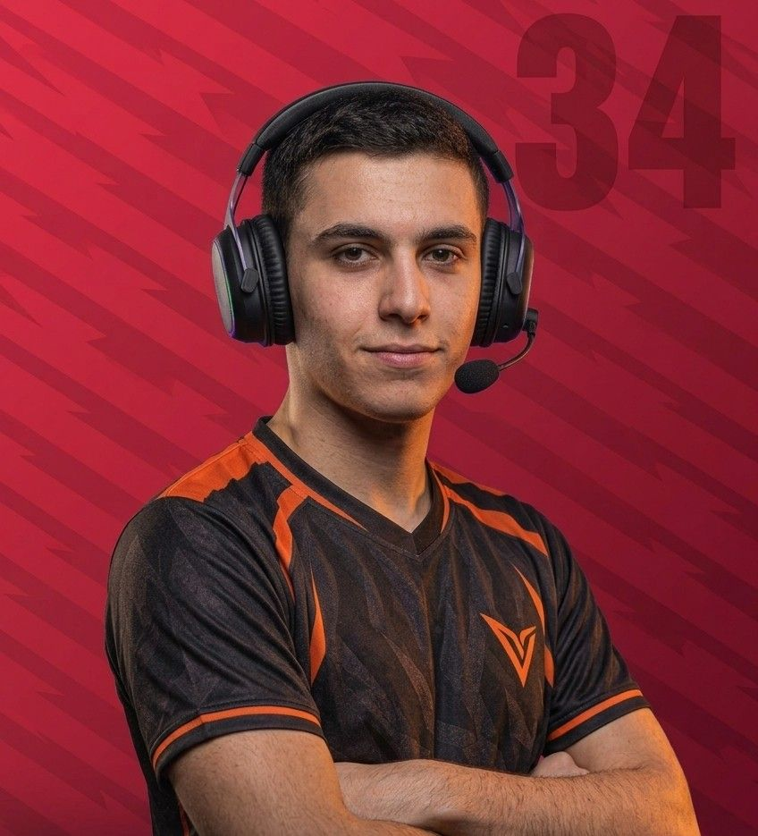
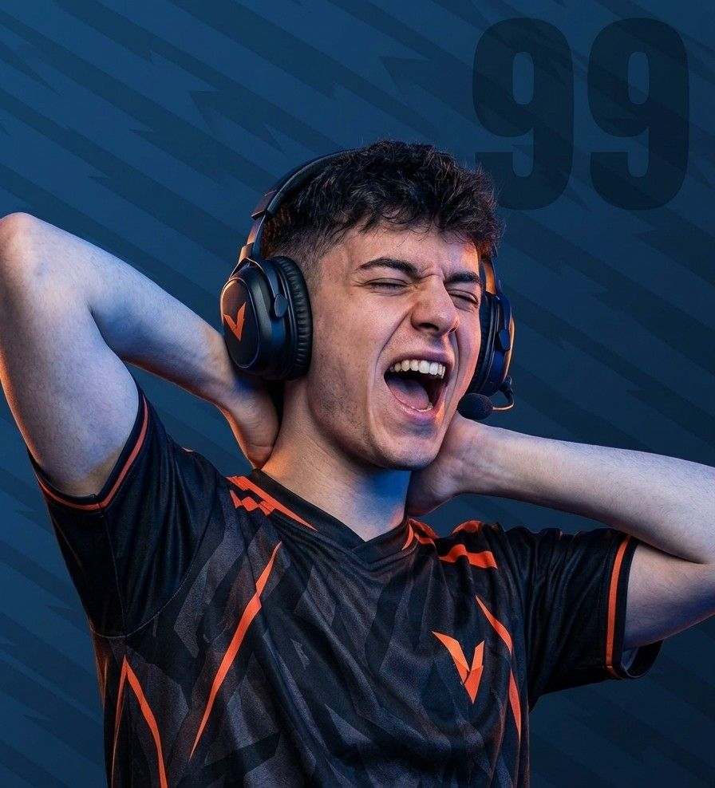

☰
Cinq titulaires, un remplacant et trois membres de staff. L'effectif est stable depuis la montee en division 1, seul le poste de support a change a l'intersaison.

Lucas Ferreira · 22 ans · Merignac
Present depuis la fondation du club en 2019, Lucas en est devenu capitaine en 2023. Son jeu repose sur une occupation methodique de la voie du haut et sur des appels tres tot dans la partie. C'est aussi lui qui represente le club aupres de la ligue regionale.

Nael Benhaddou · 20 ans · Toulouse
Recrute en 2024 apres deux saisons a Toulouse. Nael impose un rythme tres haut des les premieres minutes : le club a le deuxieme meilleur taux de premier sang du championnat depuis son arrivee. Il assure aussi les sessions de revision video du mardi.

Mathis Roux · 21 ans · Bordeaux
Trois fois meilleur joueur de la saison regionale. Mathis prepare un BTS SIO en alternance et s'entraine quinze heures par semaine en plus des matchs officiels. Il tient la chaine Twitch la plus suivie du club.

Tarek Amrani · 23 ans · Valence (Espagne)
Le plus experimente du roster, passe par deux structures espagnoles avant Bordeaux. Tarek encadre les joueurs du centre de formation le mercredi apres-midi et intervient dans les lycees de la metropole sur la pratique raisonnee du jeu video.

Enzo Vidal · 20 ans · Pau
Derniere recrue du club, reperee en division 2 la saison passee. Enzo est la voix de l'equipe en jeu : c'est lui qui declenche les engagements et recadre les rotations. Il decouvre cette annee le niveau national.

Theo Marchand · 19 ans · Libourne
Issu du centre de formation, Theo peut couvrir quatre des cinq postes. Il a dispute sept rencontres officielles la saison derniere en remplacement, dont la demi-finale regionale.
Ancien joueur professionnel, coach du club depuis 2021. Il construit les compositions et dirige les debriefs d'apres-match.
Il depouille les parties adverses et produit la note de preparation remise aux joueurs quarante-huit heures avant chaque rencontre.
Deux seances par semaine, plus un suivi du sommeil et de la posture. Le club travaille avec lui depuis la saison 2024.
Association loi 1901 fondee en 2019 a Bordeaux. 14 rue Fondaudege, 33000 Bordeaux.